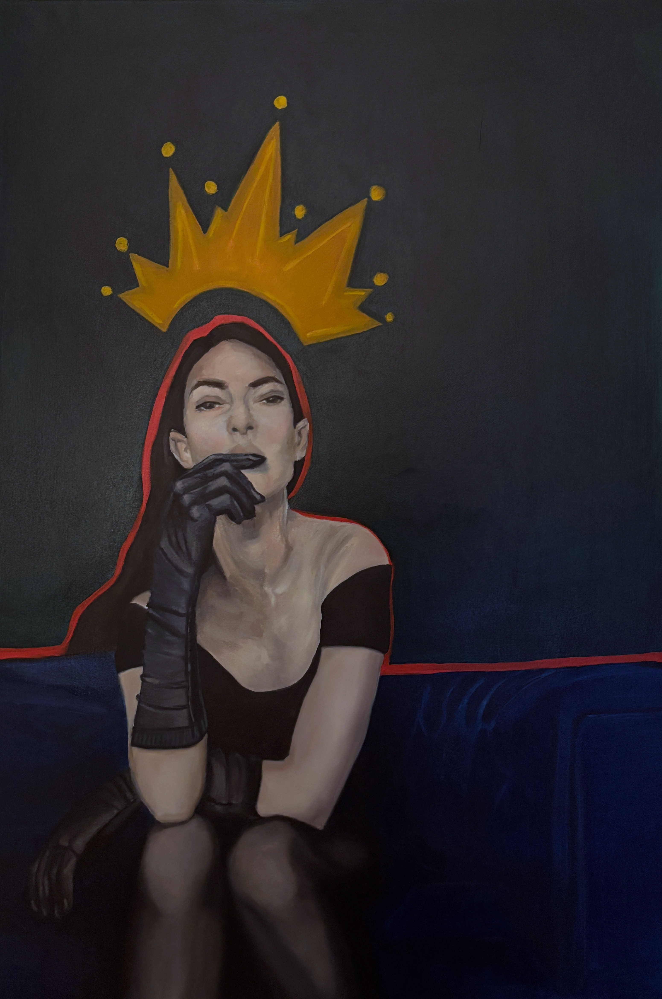
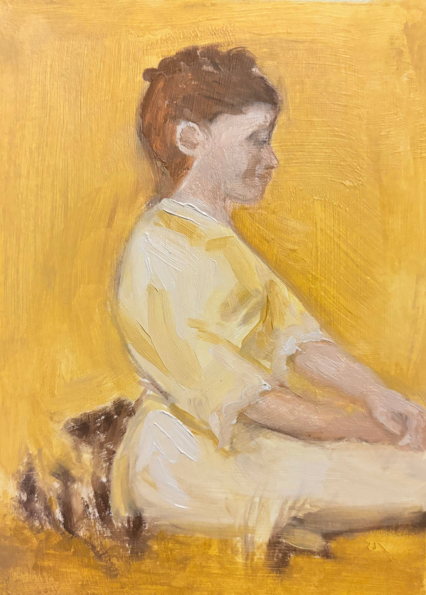
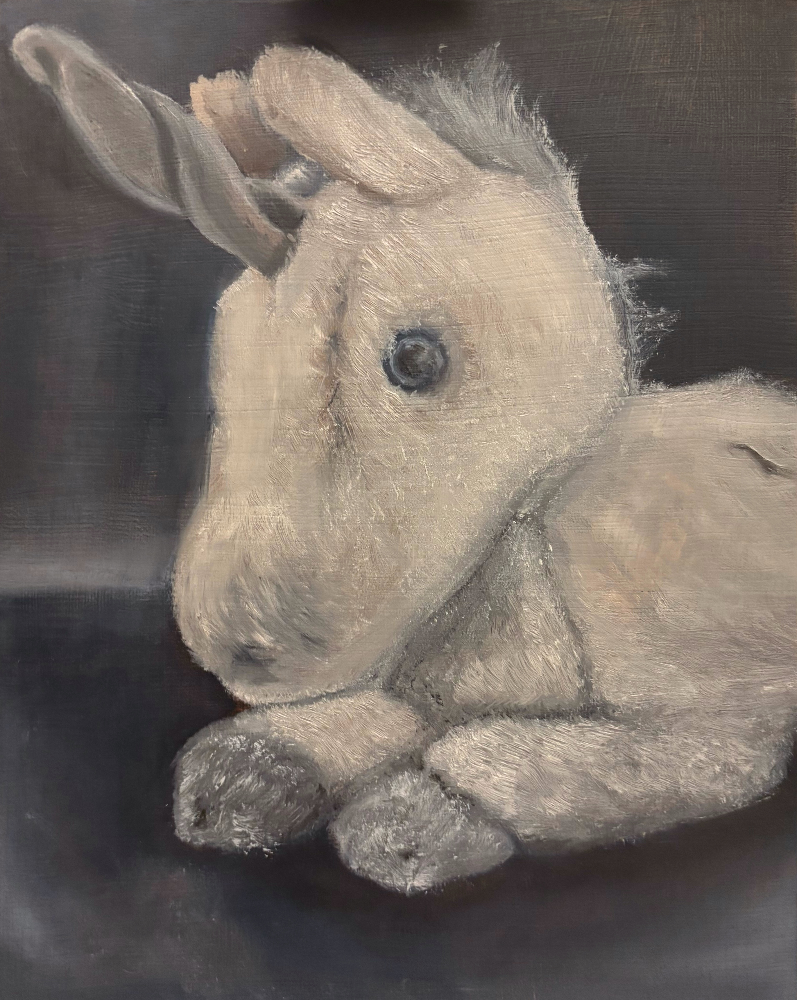
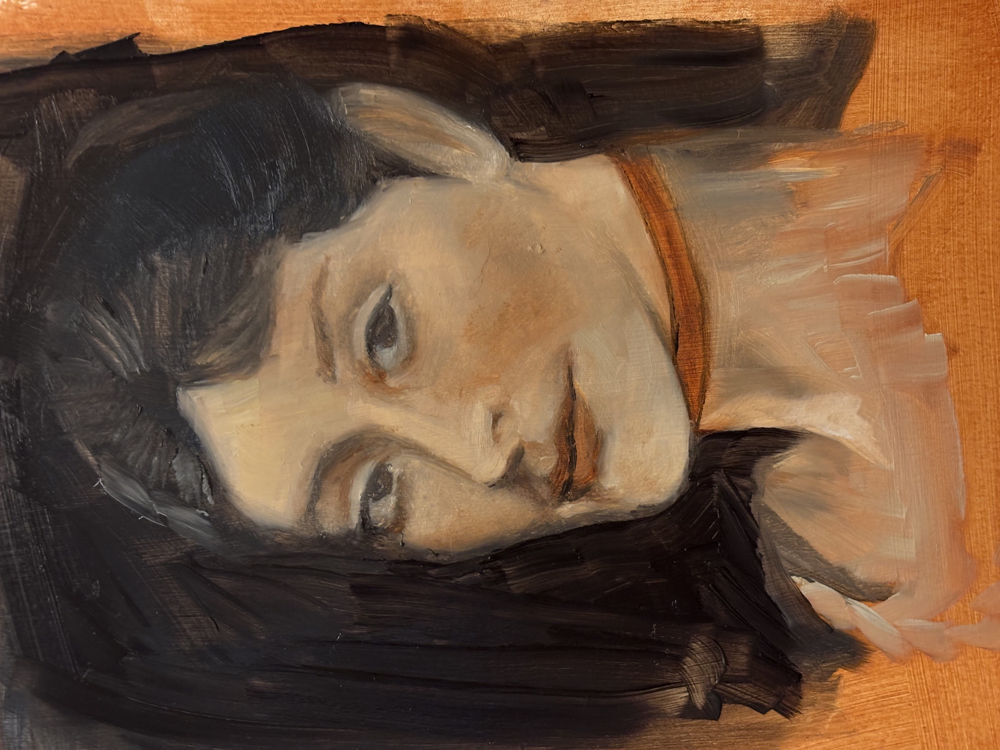
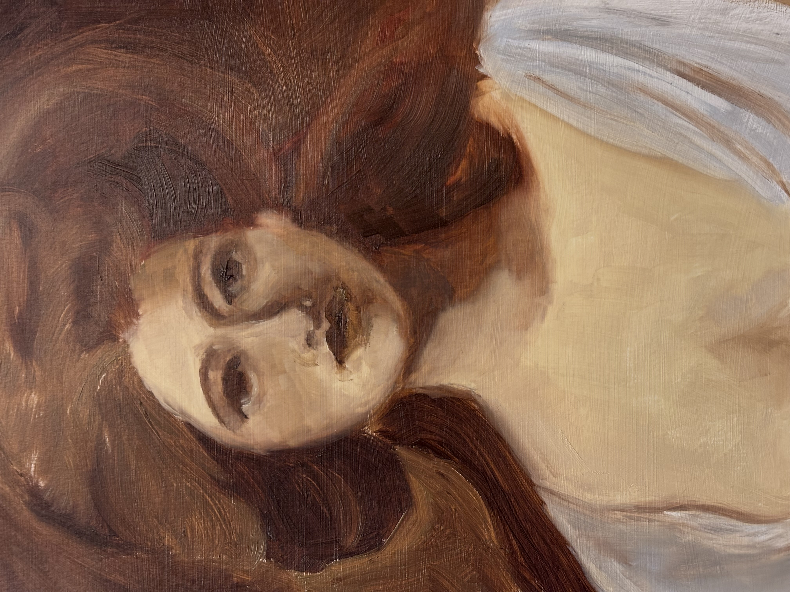
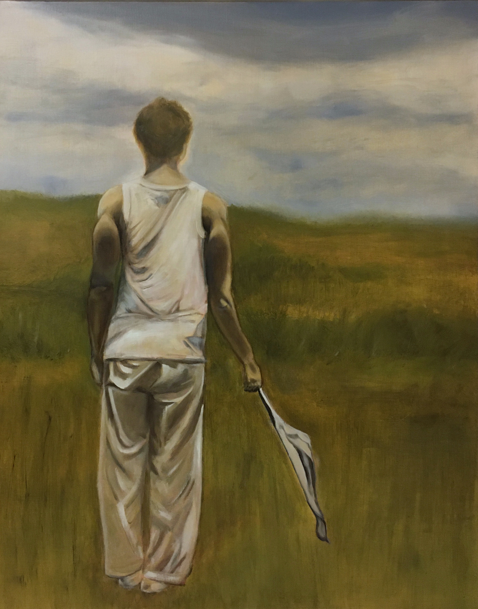
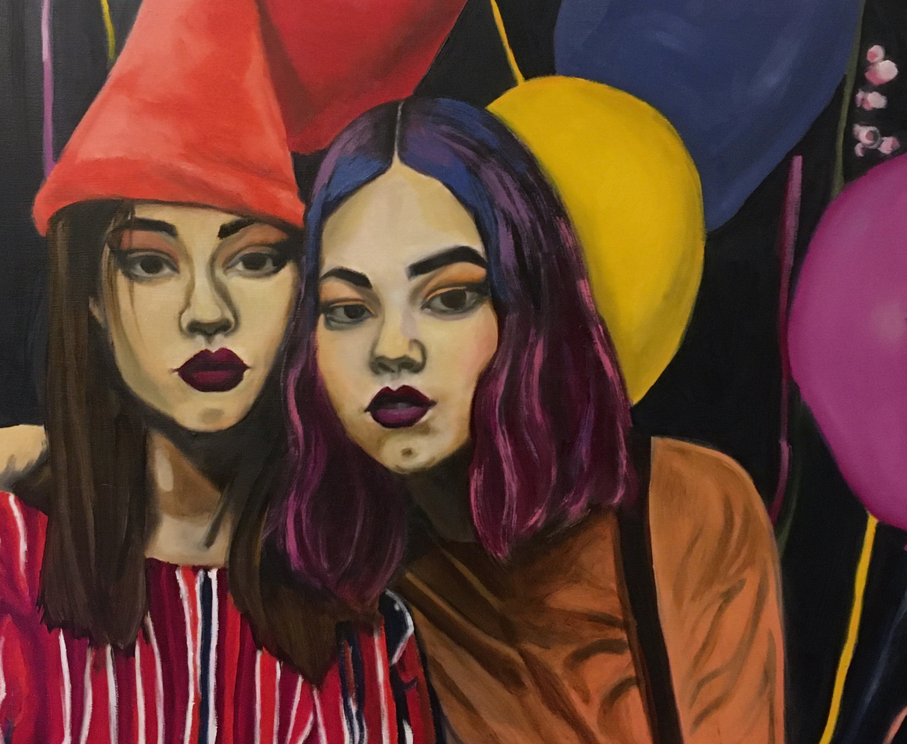
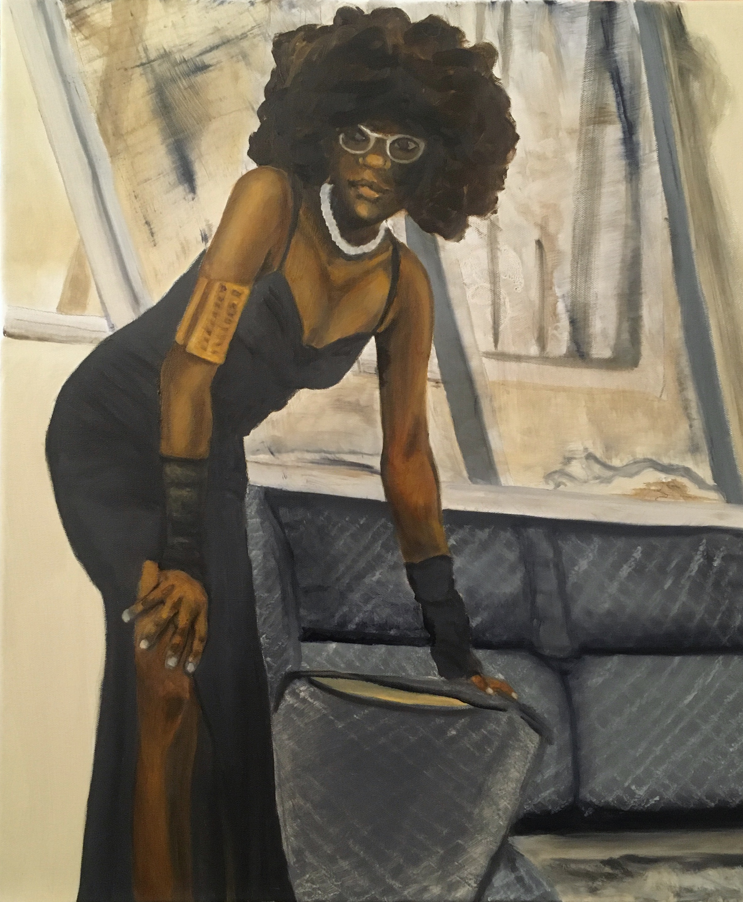
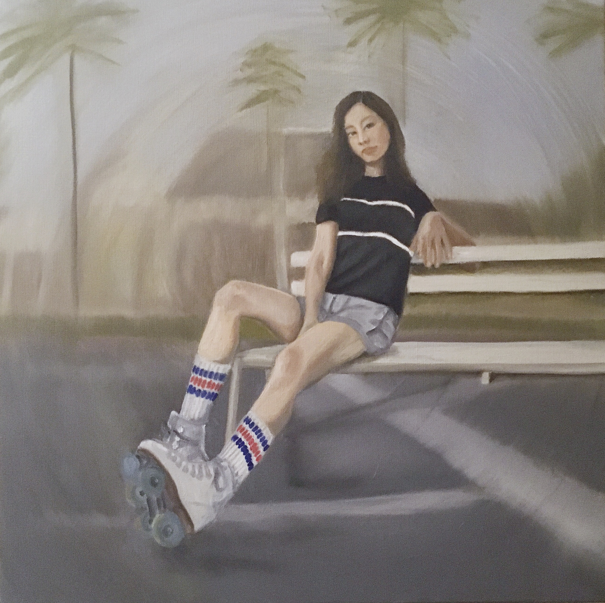

This series explores embodied sovereignty, the quiet authority that arises when a woman is fully grounded in herself. These figures are not posed for admiration or defined by ornament, status, or narrative. Their stillness carries intention; their gaze suggests awareness rather than performance. Objects like pearls, a crown, or a glass of whiskey function as subtle extensions of presence, not symbols of dependence or allure. Moving between interior space and abstraction, the paintings resist romanticization and reject idealized femininity. Instead, they present women who are self-possessed, observant, and prepared. Not waiting to be chosen, but fully owning themselves and the space they occupy.




As we delve into history, we uncover pieces of ourselves—connections that bring understanding. A photo, a document, a letter—each weaves a story that makes the past feel more human, beyond mere remnants. This year, my goal is to tell the stories of our identities. Through shared symbolism, these narratives emerge in expression, tension, and an overwhelming sense of knowing.









This year, my goal was to foster a vibrant connection between the artist, the viewer, and society, creating a shared space where we all feel seen, heard, and supported in our collective experience. This has become my mission. My 2024 collection is based on nominative determinism (aptronym), which is the theory that a person's name can have a significant role in determining their life choices or behavior, such as choosing a profession that aligns with their name. In this instance, the title is a reflection of the name being influenced by their life choices or behavior.




